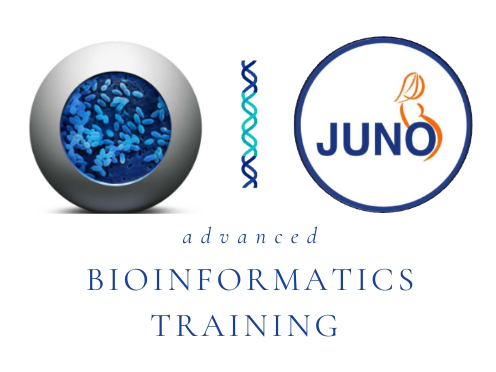

This advanced bioinformatics course was developed for the GPS and JUNO projects.
The GPS project, i.e., the Global Pneumococcal Sequencing project is a worldwide genomic surveillance network of Streptococcus pneumoniae which provides evidence for pneumococcal disease control. The JUNO project is a global genomic surveillance of Streptococcus agalactiae which is a major cause of neonatal invasive disease worldwide. One of the core aims of the GPS and JUNO projects is to strengthen the capacity of our project collaborators in generating and analysing genomic data.
This course is aimed at researchers who have an interest in learning how to carry out next generation sequencing (NGS) and analysis of bacterial genomes (i.e., Streptococcus pneumoniae and/or Streptococcus agalactiae). It concentrates on the application of cutting edge genomic techniques that are currently being implemented.
This course was funded by The Gates Foundation through the GPS and JUNO projects, and it was delivered as in-person and virtual workshops in partnership with six institutions within four continents to >100 participants as follows:
This project has been developed, designed and led by Dr. Jolynne Mokaya, Senior Bioinformatician and Bioinformatics Training Lead (for the GPS and JUNO projects), Bentley's group, Wellcome Sanger Institute.